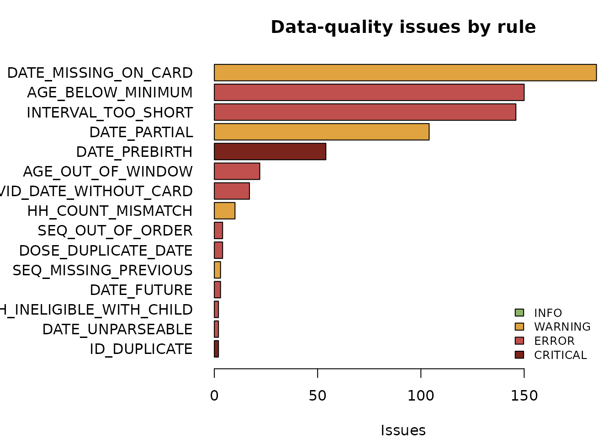

Every check_*() function returns a
vcs_validation: a table of issues with a severity, a stable
rule identifier, the record concerned and a message. Nothing is printed
as a side effect, and nothing is modified.
qa <- validate_vcs(vcs_example)
qa
#> <vcs_validation: 15 check(s), 811 issue(s)>
#> INFO: 103 WARNING: 302 ERROR: 350 CRITICAL: 56
#>
#> [CRITICAL] ID_DUPLICATE CH02731: Identifier "child_id" is not unique.
#> [CRITICAL] ID_DUPLICATE CH02731: Identifier "child_id" is not unique.
#> [CRITICAL] DATE_PREBIRTH CH00121/BCG: Vaccination recorded 4 day(s) before the date of birth.
#> [CRITICAL] DATE_PREBIRTH CH00181/BCG: Vaccination recorded 1 day(s) before the date of birth.
#> [CRITICAL] DATE_PREBIRTH CH00301/BCG: Vaccination recorded 2 day(s) before the date of birth.
#> [CRITICAL] DATE_PREBIRTH CH00531/BCG: Vaccination recorded 6 day(s) before the date of birth.
#> [CRITICAL] DATE_PREBIRTH CH01321/BCG: Vaccination recorded 9 day(s) before the date of birth.
#> [CRITICAL] DATE_PREBIRTH CH01591/BCG: Vaccination recorded 7 day(s) before the date of birth.
#> [CRITICAL] DATE_PREBIRTH CH01691/BCG: Vaccination recorded 23 day(s) before the date of birth.
#> [CRITICAL] DATE_PREBIRTH CH01701/BCG: Vaccination recorded 4 day(s) before the date of birth.
#> ... and 801 more; use issues() for the full tableFour severity levels, ordered:
vcs_severities()
#> [1] "INFO" "WARNING" "ERROR" "CRITICAL"
summary(qa, by = "severity")
#> # A tibble: 4 × 4
#> group severity n_issues n_records
#> <chr> <chr> <int> <int>
#> 1 CRITICAL CRITICAL 56 55
#> 2 ERROR ERROR 350 304
#> 3 WARNING WARNING 302 198
#> 4 INFO INFO 103 103
summary(qa, by = "rule")
#> # A tibble: 18 × 4
#> group severity n_issues n_records
#> <chr> <chr> <int> <int>
#> 1 DATE_PREBIRTH CRITICAL 54 54
#> 2 ID_DUPLICATE CRITICAL 2 1
#> 3 AGE_BELOW_MINIMUM ERROR 150 150
#> 4 INTERVAL_TOO_SHORT ERROR 146 146
#> 5 AGE_OUT_OF_WINDOW ERROR 22 22
#> 6 EVID_DATE_WITHOUT_CARD ERROR 17 17
#> 7 DOSE_DUPLICATE_DATE ERROR 4 4
#> 8 SEQ_OUT_OF_ORDER ERROR 4 4
#> 9 DATE_FUTURE ERROR 3 3
#> 10 DATE_UNPARSEABLE ERROR 2 2
#> 11 HH_INELIGIBLE_WITH_CHILD ERROR 2 2
#> 12 DATE_MISSING_ON_CARD WARNING 185 185
#> 13 DATE_PARTIAL WARNING 104 104
#> 14 HH_COUNT_MISMATCH WARNING 10 10
#> 15 SEQ_MISSING_PREVIOUS WARNING 3 3
#> 16 EVID_CARD_NOT_RECALL INFO 55 55
#> 17 EVID_RECALL_NOT_CARD INFO 46 46
#> 18 SEG_LABEL_REUSED INFO 2 2
plot(qa)
These answer “is this shaped like a household cluster survey?”.
summary(check_unique_ids(vcs_example))
#> # A tibble: 1 × 4
#> group severity n_issues n_records
#> <chr> <chr> <int> <int>
#> 1 ID_DUPLICATE CRITICAL 2 1
issues(check_psu_structure(vcs_example))
#> # A tibble: 0 × 8
#> # ℹ 8 variables: check <chr>, rule_id <chr>, severity <fct>, level <chr>,
#> # record_id <chr>, variable <chr>, value <chr>, message <chr>check_child_eligibility() takes the age window as an
argument, because it is a property of the survey protocol and not of the
package:
summary(check_child_eligibility(vcs_example, min_age_months = 12,
max_age_months = 23))
#> # A tibble: 1 × 4
#> group severity n_issues n_records
#> <chr> <chr> <int> <int>
#> 1 AGE_OUT_OF_WINDOW ERROR 22 22Card dates are frequently partial. parse_vaccine_date()
says what each value is without inventing anything:
parse_vaccine_date(c("2025-03-14", "2025-03", "2025", "", "31/02/2025",
"vu sur carte"))
#> # A tibble: 6 × 6
#> input date year month day precision
#> <chr> <date> <int> <int> <int> <chr>
#> 1 "2025-03-14" 2025-03-14 2025 3 14 day
#> 2 "2025-03" NA 2025 3 NA month
#> 3 "2025" NA 2025 NA NA year
#> 4 "" NA NA NA NA missing
#> 5 "31/02/2025" NA NA NA NA unparseable
#> 6 "vu sur carte" NA NA NA NA unparseableA partial date parses to NA. To resolve it you must name
a rule, and the rule comes back attached to the result so it can be
reported:
p <- parse_vaccine_date(c("2025-03-14", "2025-02", "2025"))
validate_partial_date(p) # default: none
#> [1] "2025-03-14" NA NA
validate_partial_date(p, rule = "midpoint")
#> [1] "2025-03-14" "2025-02-15" NA
validate_partial_date(p, rule = "midpoint", min_precision = "year")
#> [1] "2025-03-14" "2025-02-15" "2025-07-01"Each reads its parameters from the schedule.
issues(check_prebirth_vaccination(vcs_example))[1:3, c("record_id", "value", "message")]
#> # A tibble: 3 × 3
#> record_id value message
#> <chr> <chr> <chr>
#> 1 CH00121/BCG 2024-05-14 Vaccination recorded 4 day(s) before the date of birth.
#> 2 CH00181/BCG 2024-09-05 Vaccination recorded 1 day(s) before the date of birth.
#> 3 CH00301/BCG 2024-07-07 Vaccination recorded 2 day(s) before the date of birth.
summary(check_vaccine_sequence(vcs_example))
#> # A tibble: 2 × 4
#> group severity n_issues n_records
#> <chr> <chr> <int> <int>
#> 1 SEQ_OUT_OF_ORDER ERROR 4 4
#> 2 SEQ_MISSING_PREVIOUS WARNING 3 3
summary(check_dose_intervals(vcs_example))
#> # A tibble: 1 × 4
#> group severity n_issues n_records
#> <chr> <chr> <int> <int>
#> 1 INTERVAL_TOO_SHORT ERROR 146 146Tolerances are arguments, so a survey that accepts a few days of slack in card transcription can say so:
nrow(issues(check_age_at_vaccination(vcs_example)))
#> [1] 150
nrow(issues(check_age_at_vaccination(vcs_example, tolerance_days = 7)))
#> [1] 43Disagreement between card and recall is expected in coverage surveys,
so it is reported at INFO rather than as an error. What
matters is the rate, and whether it clusters on one interviewer
or PSU.
summary(check_card_transcription(vcs_example))
#> # A tibble: 3 × 4
#> group severity n_issues n_records
#> <chr> <chr> <int> <int>
#> 1 EVID_DATE_WITHOUT_CARD ERROR 17 17
#> 2 EVID_CARD_NOT_RECALL INFO 55 55
#> 3 EVID_RECALL_NOT_CARD INFO 46 46A card date recorded where no card was seen is a different matter,
and is an ERROR.
flag_vaccine_inconsistencies() collapses the checks to
one row per child-vaccine record, ready to join onto the analysis
table.
flags <- flag_vaccine_inconsistencies(vcs_example)
head(flags)
#> # A tibble: 6 × 5
#> child_id vaccine n_flags max_severity rules
#> <chr> <chr> <int> <chr> <chr>
#> 1 CH00121 BCG 1 CRITICAL DATE_PREBIRTH
#> 2 CH00181 BCG 2 CRITICAL DATE_PREBIRTH;EVID_CARD_NOT_RECALL
#> 3 CH00182 BCG 1 CRITICAL DATE_PREBIRTH
#> 4 CH00301 BCG 1 CRITICAL DATE_PREBIRTH
#> 5 CH00531 BCG 1 CRITICAL DATE_PREBIRTH
#> 6 CH00551 OPV0 1 CRITICAL DATE_PREBIRTH
table(flags$max_severity)
#>
#> CRITICAL ERROR INFO WARNING
#> 54 279 76 186Note what this does not do: it does not remove the flagged records. A record that triggers a QA flag is a record to investigate, not a record to discard.
The default ruleset flags and changes nothing.
vcs_default_rules()
#> <vcs_ruleset: 5 rule(s)>
#> DATE_FUTURE [ERROR ] flag Card date is after the interview date
#> DATE_PREBIRTH [CRITICAL] flag Card date is before the child's date of birth
#> DATE_PARTIAL [WARNING ] flag Card date is partial; a resolution rule must be chosen explicitly
#> DATE_UNPARSEABLE [ERROR ] flag Card date could not be parsed in any known format
#> CARD_DATE_NO_CARD [ERROR ] flag A card date exists although no card was seen
cleaned <- clean_vcs(vcs_example)
identical(cleaned$vaccinations$card_date, vcs_example$vaccinations$card_date)
#> [1] TRUE
summary(cleaned$audit)
#> # A tibble: 5 × 5
#> rule_id action severity n_records n_changes
#> <chr> <chr> <chr> <int> <int>
#> 1 DATE_PREBIRTH flag CRITICAL 54 54
#> 2 CARD_DATE_NO_CARD flag ERROR 17 17
#> 3 DATE_FUTURE flag ERROR 3 3
#> 4 DATE_UNPARSEABLE flag ERROR 2 2
#> 5 DATE_PARTIAL flag WARNING 104 104The log carries everything needed to reconstruct or reverse a decision:
head(audit_changes(cleaned), 3)
#> # A tibble: 3 × 11
#> record_id level variable original_value new_value rule_id rule_description
#> <chr> <chr> <chr> <chr> <chr> <chr> <chr>
#> 1 CH00571/MCV1 vacci… flag_da… NA TRUE DATE_F… Card date is af…
#> 2 CH05241/MCV1 vacci… flag_da… NA TRUE DATE_F… Card date is af…
#> 3 CH05991/MCV1 vacci… flag_da… NA TRUE DATE_F… Card date is af…
#> # ℹ 4 more variables: severity <fct>, action <chr>, timestamp <chr>,
#> # package_version <chr>
names(audit_changes(cleaned))
#> [1] "record_id" "level" "variable" "original_value"
#> [5] "new_value" "rule_id" "rule_description" "severity"
#> [9] "action" "timestamp" "package_version"If you decide a value must go, say so explicitly, and the change is logged with the original value.
rules <- vcs_ruleset(
vcs_rule(
"BLANK_FUTURE_DATES",
"Blank card dates recorded after the interview date",
level = "vaccination",
where = !is.na(card_date) & !is.na(interview_date) &
card_date > interview_date,
variable = "card_date",
action = "set_na",
severity = "ERROR"
)
)
strict <- clean_vcs(vcs_example, rules = rules)
audit_changes(strict)[, c("record_id", "variable", "original_value",
"new_value", "rule_id")]
#> # A tibble: 3 × 5
#> record_id variable original_value new_value rule_id
#> <chr> <chr> <chr> <chr> <chr>
#> 1 CH00571/MCV1 card_date 2026-06-03 NA BLANK_FUTURE_DATES
#> 2 CH05241/MCV1 card_date 2026-06-26 NA BLANK_FUTURE_DATES
#> 3 CH05991/MCV1 card_date 2026-06-18 NA BLANK_FUTURE_DATESUse dry_run = TRUE to see what a ruleset would do before
letting it do it:
dry <- clean_vcs(vcs_example, rules = rules, dry_run = TRUE)
nrow(audit_changes(dry))
#> [1] 3
identical(dry$vaccinations$card_date, vcs_example$vaccinations$card_date)
#> [1] TRUE
f <- tempfile(fileext = ".csv")
export_cleaning_log(cleaned, f)
head(read.csv(f), 2)
#> record_id level variable original_value new_value
#> 1 CH00571/MCV1 vaccination flag_date_future NA TRUE
#> 2 CH05241/MCV1 vaccination flag_date_future NA TRUE
#> rule_id rule_description severity action
#> 1 DATE_FUTURE Card date is after the interview date ERROR flag
#> 2 DATE_FUTURE Card date is after the interview date ERROR flag
#> timestamp package_version
#> 1 2026-10-02T16:33:34+0000 0.2.0
#> 2 2026-10-02T16:33:34+0000 0.2.0
unlink(f)exclude_variables redacts the original values of any
variable that must not travel with the log.
Coverage estimates rest on determinable status, and card-documented coverage rests on cards being seen.
card_completeness(vcs_example, by = ~stratum)
#> # A tibble: 2 × 6
#> n_children n_card_seen n_card_missing prop_card_seen prop_card_missing stratum
#> <int> <int> <int> <dbl> <dbl> <chr>
#> 1 126 70 0 0.556 0 rural
#> 2 130 79 0 0.608 0 urban
head(date_completeness(vcs_example, by = ~vaccine))
#> # A tibble: 6 × 6
#> n_documented n_dated n_partial prop_dated prop_partial vaccine
#> <int> <int> <int> <dbl> <dbl> <chr>
#> 1 137 116 13 0.847 0.0949 BCG
#> 2 94 80 7 0.851 0.0745 IPV1
#> 3 92 75 8 0.815 0.0870 MCV1
#> 4 102 88 7 0.863 0.0686 OPV0
#> 5 81 68 8 0.840 0.0988 OPV1
#> 6 69 61 5 0.884 0.0725 OPV2Missingness by interviewer is one of the clearest fieldwork signals a survey produces:
head(vcs_missingness(vcs_example, variables = "card_seen", by = ~enumerator), 5)
#> # A tibble: 5 × 6
#> variable group n n_missing prop_missing enumerator
#> <chr> <chr> <int> <int> <dbl> <chr>
#> 1 card_seen ENU01 14 0 0 ENU01
#> 2 card_seen ENU02 20 0 0 ENU02
#> 3 card_seen ENU03 28 0 0 ENU03
#> 4 card_seen ENU04 32 0 0 ENU04
#> 5 card_seen ENU05 22 0 0 ENU05